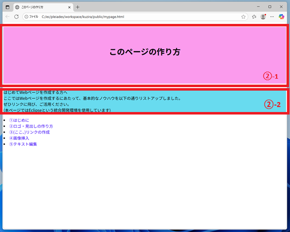
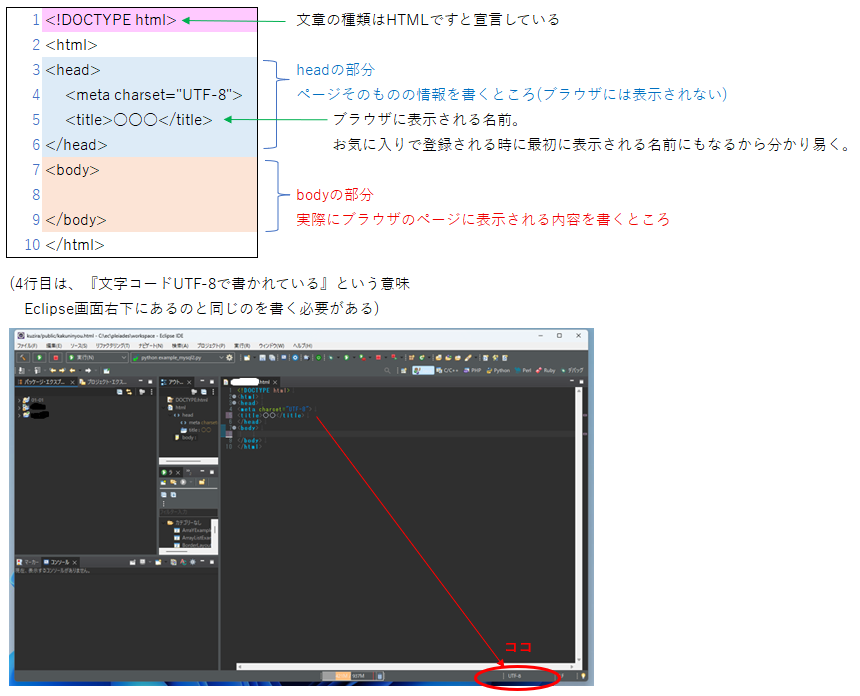

この部分です
｢はじめに｣のページより、現在｢index.html｣というクラスが出来上がり、そこに以下が記されていると幸いですが↓
1 <!DOCTYPE html>
2 <html>
3 <head>
4 <meta charset="UTF-8">
5 <title>あなたが付けたタイトル</title>
6 </head>
7 <body>
8
9 </body>
10 </html>
この<body> ～ </body>の間に、ページに表示したいものを入力します。

まず、文字の入力については以下のように定められています。
①見出し＝<h〇> ～ </h〇>間に書く
<h1>～<h6>まで用意されています。
h1が最も重要な見出しで、大きいフォント・太字で設定されています。
hの後の数が大きい程重要度が下がります。
例えばh2が3つ等、複数でも可です。また、h1の次にh3を使用等も可で、必ずしも順番に使う必要はありません。
②段落＝<p> ～ <p>間に書く
③改行＝<br>
①・②どちらも、文字列の途中で改行したい時には<br>と入力します。
今回、このページの②-1部分の文字は<h1>タグを、②-2部分の文字は<p>タグを使って記入しています。
プログラムの8行目以降に、以下の通り追記すると、下の様なページが完成します↓
1 <!DOCTYPE html>
2 <html>
3 <head>
4 <meta charset="UTF-8">
5 <title>あなたが付けたタイトル</title>
6 </head>
7 <body>
8 <h1>このページの作り方</h1>
9 <p>はじめてWebページを作成する方へ<br>
10 ここではWebページを作成するにあたって、基本的なノウハウを以下の通りリストアップしました。<br>
11 ぜひリンクに飛び、ご活用ください。<br>
12 (本ページではEclipseという統合開発環境を使用しています)
13 </p>
14 </body>
15 </html>
まずは文字を表示することができました！
文字やページの各設定は、⑤テキスト編集にて行います。
また、このように途中経過をブラウザに表示するには、以下手順をご覧ください↓
本ページの様に、Eclipse使用の場合には、画面左端｢パッケージ・エクスプローラー｣に、作成したクラスが一覧になっていると思われます。
表示したいクラスの上で右クリック→｢次で開く｣→｢Webブラウザー｣で表示できます。
この後も、都度経過を確認したい時には、プログラムを上書きした後にブラウザの更新ボタンを押下すると確認できますよ。